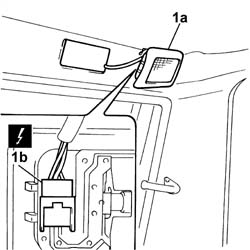

7040E16 rear courtesy light - r+r
- Path
- Procedures > 70 FITTINGS > 7040 BODYSHELL INTERIOR TRIMS AND FITTINGS > 7040E interior courtesy light system > 7040E16 rear courtesy light - r+r
- Kind
- repair procedure (removal / refitting; the operation number is the code)
- Applies to
- all engines; all production periods
- Interactive page
- https://sloeber94.github.io/elrnDB-fDbl/en/#/2585141
Applies to: all engines; all production periods
 Removing
Removing
 Refitting
RefittingDisconnect the battery negative terminal.
1. Remove the courtesy light (1a) from the housing and disconnect the electrical connector (1b).
 | Name | Connector |
|---|---|---|
1b | Data not available yet |

Applies to: all engines; all production periods
Refitting
RemovingConnect the courtesy light electrical connector.
| Name | Connector |
|---|---|---|
- | Data not available yet |
Fit the courtesy light in its housing and connect the negative battery terminal.